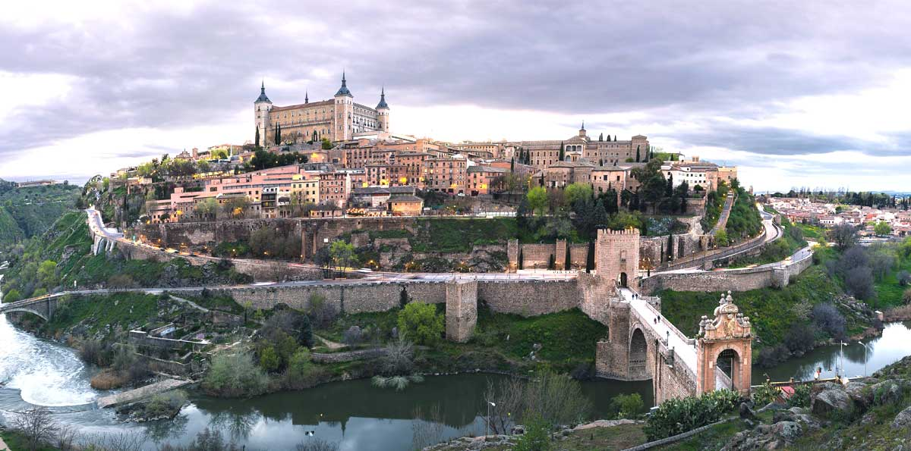
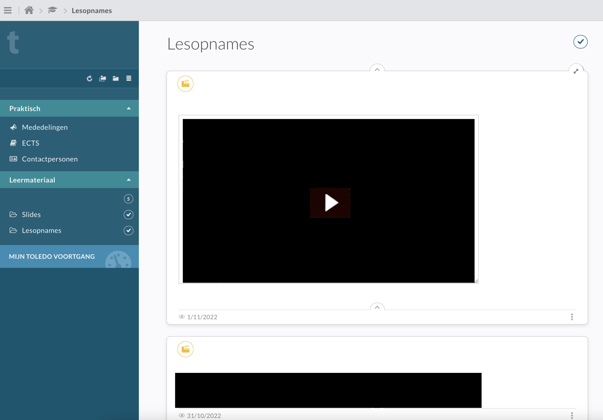
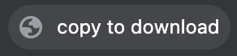
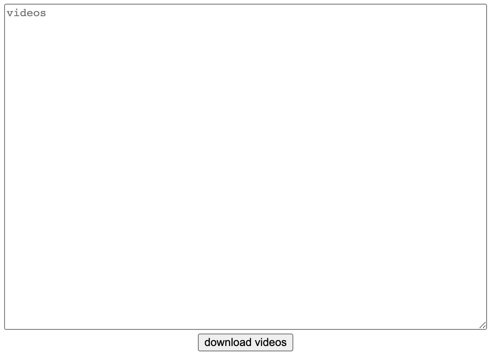

{{ error }}

toledo downloader
1) Sleep volgende knop naar je bladwijzerbalk :
copy to download
2) Open vervolgens de Toledo pagina waar je de video's op staan die jij wilt downloaden:

3) Klik vervolgens op de knop die je zojuist naar je bladwijzerbalk hebt gesleept:

4) Plak vervolgens de text die de knop voor jou gekopiëerd heeft in het tekstvlak op
de homepagina van deze site:

5) En klik vervolgens op de download knop van de gewenste video met de gewenste filesize